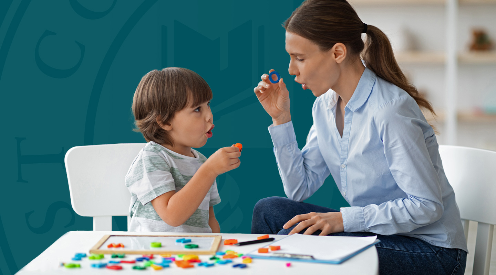

Introduction
Speech therapy is the assessment and treatment of communication problems and speech disorders. It is performed by speech-language pathologists (SLPs), which are often referred to as speech therapists.
Speech therapy techniques are used to improve communication. These include articulation therapy, language intervention activities, and others depending on the type of speech or language disorder.
Speech therapy may be needed for speech disorders that develop in childhood or speech impairments in adults caused by an injury or illness, such as stroke or brain injury.
Speech Theraphy for children
- interact through talking and playing, and using books, pictures other objects as part of language intervention to help stimulate language development
- model correct sounds and syllables for a child during age-appropriate play to teach the child how to make certain sounds
- provide strategies and homework for the child and parent or caregiver on how to do speech therapy at home
For your child, speech therapy may take place in a classroom or small group, or one-on-one, depending on the speech disorder. Speech therapy exercises and activities vary depending on your child's disorder, age, and needs. During speech therapy for children, the SLP may:
Conditions treated with Speech Theraphy
Aphasia:
People with aphasia can have difficulty reading, writing, speaking and understanding language. It often develops after a stroke or injury damages the area of the brain that processes language. Apraxia: People with apraxia know what they want to say, but have trouble forming the words. They may have trouble with reading, writing, swallowing and other motor skills.
Apraxia:
People with apraxia know what they want to say, but have trouble forming the words. They may have trouble with reading, writing, swallowing and other motor skills.
Articulation disorder:
People with articulation disorders are unable to produce certain word sounds. For example, they may substitute one sound for another like saying 'wed' instead of 'red' or 'thith' instead of 'this.'
Cognitive-communication disorders:
ou might have difficulty communicating if the area of your brain that controls your thinking ability is damaged. People with cognitive-communication disorders may have issues with listening, speaking, memory and problem-solving.
Dysarthria:
People with dysarthria may have slow or slurred speech. It happens when the muscles that control your speech become weak. Common causes include stroke, multiple sclerosis (MS), amyotrophic lateral sclerosis (ALS) or other nervous system disorders.
Fluency disorders:
Fluency disorders disrupt the speed, flow and rhythm of your speech. Stuttering (speech that's interrupted or blocked) is a fluency disorder. So is cluttering (speech that's merged together and fast).
Expressive disorders:
:People with expressive disorders may have difficulty getting words out or conveying their thoughts. Expressive disorders are linked to stroke or other neurological events, developmental delays and hearing loss.
Receptive disorders:
People with receptive disorders have difficulty comprehending or processing what others are saying. They may have a limited vocabulary, trouble following directions or seem uninterested in conversations.
Receptive disorders:
Resonance disorders are health conditions that affect your oral or nasal cavities. They can block airflow and alter the vibrations that help you hear sounds. Cleft palate, swollen tonsils and other conditions that affect the structure of your mouth and nose can cause resonance disorders.
Types
Speech Therapy for Late Talkers
- A common speech therapy method is used to help children who have reached the expected age for speech development but have not started talking.
- If your infant or toddler should be talking by now but isn't, they may be referred to a speech therapist. The therapist will likely try different things to encourage your child to talk, including playing with him. Sometimes, withholding a favorite toy until a child asks for it motivates small children to talk, but this depends on the circumstance.
- For some children, other types of communication, such as sign language or picture cards, might be introduced. Speech therapists may also refer your child for further evaluation, such as hearing tests if necessary.
Speech Therapy for Kids With Apraxia
Children with apraxia of speech have difficulty saying certain syllables or making certain sounds. Your child knows what they want to say, but it doesn't seem to come out right. Speech therapists are qualified to evaluate children for apraxia by using several tests, including:
- Oral-motor assessment to check for muscle weakness in the jaw, lips, or tongue
- Melody of speech assessment during which the therapist listens to see if they can appropriately stress certain syllables and use pitch and pauses at the appropriate place in a sentence
- Speech sound assessment further determines how well the child can pronounce sounds, including vowels, consonants, and sound combinations. This includes determining how well others are able to understand the child's conversational speech
If your child is diagnosed with apraxia, they will probably need speech therapy on a one-on-one basis several times per week.1 This therapy will likely consist of intensively practicing their speech. The therapist will try to help your child understand auditory feedback as well as visual or tactile cues.
Speech Therapy for Stuttering
Speech therapy techniques can be applied to help treat stuttering.
Stuttering is a problem that typically develops during childhood but can develop during adulthood as well.2 Stuttering is usually considered a type of behavioral problem. Speech therapists will try to teach your child who stutters behavioral modification techniques that in turn may help control their stuttering.
A common method that may be used on your child is to teach them to control the rate of speech since speaking too quickly can make stuttering worse for some people. Practicing speech in a slower, more fluent manner can be helpful.3 It can also be helpful to monitor breathing.
Speech Therapy for Aphasia
Aphasia is a condition that causes difficulty speaking as a result of some sort of damage to the brain. The condition can also consist of difficulty listening, reading, and writing. Aphasia happens to many adults after they have experienced a stroke.
Speech therapists play a crucial role in diagnosing aphasia by evaluating an individual's ability to understand others, express themselves, and even swallow. There are many different things a speech therapist might do to help a person with aphasia, including:
-

- Drills to improve specific language skills
- Group therapy to improve conversational skills
- Gestures and writing to augment their communication skills
Activities
For children, speech therapy usually involves play, like sequencing activities or language-based board games.
Some examples of speech therapy activities include
-
Tongue and mouth exercises:
Your speech therapist will show you exercises and motions that will strengthen your mouth and tongue. These exercises help train your tongue to move in coordinated patterns.
-
Facial movements:
Controlling the expression on your face can help improve your motor skills. Your therapist might have you smile or pucker your lips, then relax your face.
Reading out loud:
If your speech disorder prevents you from moving your mouth and tongue properly, reading out loud can strengthen the connection between your brain and mouth.
Playing word games:
Studies have shown that memory games, word searches and crossword puzzles can maintain cognitive function and improve thinking skills.